무선설비산업기사 (2010-05-02 기출문제)
1과목: 디지털 전자회로
1. K, O, R, P, A 영문자를 표준 BCD 코드로 각각 구성할 때 영문자 코드의 존 비트(zone bit) 구성이 다른 문자는 무엇인가?
- K
- O
- P
- A
(정답률: 77%)

2. 8지수 666.6을 10진수로 변환한 값은 무엇인가?
- 446.65
- 446.75
- 438.75
- 438.65
(정답률: 85%)
3. v(t)=50(1+0.2cos4π×10t)cos2π×10t로 주어지는 진폭변조파에서 신호파의 최대진폭과 주파수는 각각 얼마인가?
- 10[V], 10[Hz]
- 10[V], 20[Hz]
- 50[V], 10[Hz]
- 50[V], 20[Hz]
(정답률: 64%)
4. 2단 이상의 증폭기에서 잡음을 줄일 수 있는 가장 효과적인 방법은?
- 종단 증폭기의 이득은 첫단 증폭기에 비해 가능한 낮게 설계한다.
- 첫단 증폭기는 가능한 이득이 큰 증폭기로 구성한다.
- 첫단 증폭기를 트랜지스터(쌍극성 트랜지스터) 증폭기로 구성한다.
- 첫단 증폭기를 저잡음을 발생하는 FET 증폭기로 구성한다.
(정답률: 87%)
5. 그림의 저주파 소신호 FET 증폭기에서 gm=1[mA/V], rd=100[kΩ], Rd=50[kΩ], Rs=1[kΩ]일 때 전압 증폭도 |A|≒|Vo / Vi|는 얼마인가?
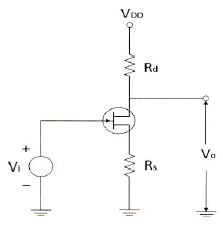
- 10
- 20
- 30
- 40
(정답률: 58%)
6. 상승시간(Rise Time)은 펄스 진폭의 몇 [%]부터 몇 [%]까지 상승하는데 걸리는 시간인가?
- 0~90[%]
- 10~90[%]
- 10~100[%]
- 0~100[%]
(정답률: 90%)
7. FET에서 VGS=0.7[V]로 일정히 유지하고 VDS를 6[V]에서 10[V]로 변화시켰을 때 ID가 10[mA]에서 12[mA]로 변하였다. 드레인 저항(Rd)은 얼마인가?
- 0.5[kΩ]
- 0.5[MΩ]
- 2[kΩ]
- 8[kΩ]
(정답률: 73%)
8. 반가산기에 대한 논리회로도로 옳은 것은? (단, X, Y: 입력, C: Carry, S: 합)
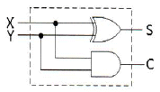
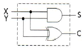
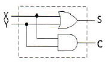
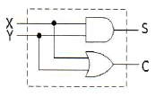
(정답률: 75%)
9. 다음 그림과 같은 발진기는?
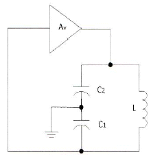
- 콜피츠 발진기
- 하틀리 발진기
- 이상 발진기
- 클랩 발진기
(정답률: 79%)
10. 수정 발진자의 직렬공진 주파수를 fs, 병렬공진 주파수를 fp라 할 때 안정된 발진을 하기 위한 동작주파수 f의 범위로 가장 적합한 것은?
- fs < f < fp
- fs > f
- fp < f < fs
- fp < f
(정답률: 86%)
11. 다음과 같은 출력 파형에서 주파수는 몇 [Hz] 인가?
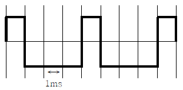
- 200[Hz]
- 250[Hz]
- 300[Hz]
- 350[Hz]
(정답률: 78%)
12. 전류직렬 부궤환 회로에서 부궤환을 걸지 않았을 때 증가되지 않은 것은? (문제 오류로 실제 시험에서는 모두 정답처리 되었습니다. 여기서는 가번을 누르면 정답 처리 됩니다.)
- 출력 임피던스
- 입력 임피던스
- 비직선 왜곡
- 대역폭
(정답률: 82%)
13. 다음 중 최고 주파수가 8[kHz]인 신호파를 펄스코드변조(PCM)할 경우 표본화 주기로 적합한 것은?
- 1.25[μs]
- 6.25[μs]
- 12.5[μs]
- 62.5[μs]
(정답률: 69%)
14. 다음 중 정보 전송시 대역폭 효율[bps/Hz]이 가장 우수한 변조 방식은?
- 4PSK
- FSK
- ASK
- 16QAM
(정답률: 89%)
15. 맥동률이 2.5[%]인 정류회로의 부하양단 평균 직류전압이 220[V]이다. 교류분은 얼마나 포함되어 있는가?
- 2.2[V]
- 3.3[V]
- 4.4[V]
- 5.5[V]
(정답률: 75%)
16. 다음 중 멀티플렉서의 실현에 대한 내용으로 틀린 것은?
- 여러 개의 데이터 입력을 적은 수의 채널로 전송한다.
- n개의 입력선과 2n개의 선택선으로 구성한다.
- 선택선은 비트조합에 의해 입력 중 하나가 선택된다.
- Data Selector라고도 할 수 있다.
(정답률: 89%)
17. 전파정류회로에서 실효값을 나타내는 식은?
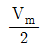
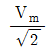
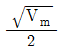
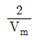
(정답률: 88%)
18. 그림과 같은 반파 정류회로에서 콘덴서 C의 단자전압은 얼마인가?
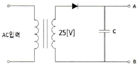
- 25[V]×1
- 25[V]×√2
- 25[V]×1/√2
- 25[V]×π
(정답률: 82%)
19. 난수 발생 회로에서 n비트의 레지스터를 사용할 경우 발생하는 난수는 얼마인가?
- n-1개
- 2n -1개
- 2n +1개
- n+1개
(정답률: 90%)
20. 다음의 진리표에 대한 논리회로 기호로 올바른 것은?
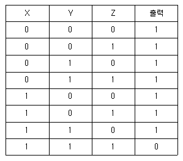
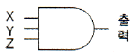
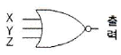
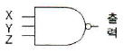
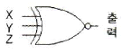
(정답률: 88%)
2과목: 무선통신 기기
21. 다음은 QAM의 특징을 열거한 것이다. 틀린 것은?
- 2개의 직교성 DSB-SC를 선형적으로 합성한 것이다.
- QAM의 대역폭 효율은 2[bps/Hz]이다.
- ASK와 FSK를 혼합한 기술이다.
- QAM의 소요 전송 대역은 정보 신호 대역폭의 2배이다.
(정답률: 74%)
22. 마이크로파 통신의 설명 중 옳지 않은 것은?
- 공중선 이득을 크게 할 수 있다.
- 외부잡음의 영향에 약하다.
- 광대역 전송이 가능하다.
- 주로 가시거리 통신이 행해진다.
(정답률: 81%)
23. CDMA 시스템에서의 채널 구분은 Walsh Code를 이용하는데 분류가 맞는 것은?
- 파일롯: Walsh 1, 동기채널: Walsh 64, 페이징: 최대7개, 트래픽: 나머지
- 파일롯: Walsh 0, 동기채널: Walsh 32, 페이징: 최대7개, 트래픽: 나머지
- 파일롯: Walsh 0, 동기채널: Walsh 48, 페이징: 최대7개, 트래픽: 나머지
- 파일롯: Walsh 0, 동기채널: Walsh 32, 페이징: 최대9개, 트래픽: 16
(정답률: 85%)
24. 다음 중 전원설비의 측정기기에 대한 설명이 잘못된 것은?
- 전류계는 전원출력단에 직렬로, 전압계는 병렬로 연결한다.
- 전류계는 전원출력단에 병렬로, 전압계는 직렬로 연결한다.
- 전류계는 내부저항이 작아야 한다.
- 전압계는 내부저항이 커야 한다.
(정답률: 83%)
25. 다음 중 무선수신기의 종합특성에서 실효선택도에 해당되지 않는 것은?
- 혼변조
- 상호변조
- 감도억압효과
- 스퓨리어스 응답
(정답률: 67%)
26. 이동통신 단말기에서 수신성능을 측정하는 대표적인 파라미터로서 RSSI(Received Signal Strength Indicator, 수신전계강도)가 사용되는데, 이것에 대한 설명으로 틀린 것은?
- RSSI는 수신대역폭 내에 들어온 희망신호 전력뿐만 아니라 간섭신호 전력도 포함하고 있다.
- RSSI가 높으면 간섭신호에 관련 없이 수신환경이 좋은 것으로 볼 수 있다.
- RSSI는 디지털 및 아날로그 통신시스템에서 사용된다.
- RSSI가 낮으면 약전계 지역으로 볼 수 있다.
(정답률: 74%)
27. 전압변동율이 10[%]이고 정격부하 연결시의 출력전압이 220[V]였다면 무부하시 출력전압은 몇 [V] 인가?
- 221
- 232
- 242
- 253
(정답률: 89%)
28. 수신기의 감도측정에서 무유도 부하저항이 25[kΩ]일 때 규격출력 20[mW]보다 0[dB] 낮은 출력 전압으로 조정하고자 한다. 적합한 조정 전압은 몇 [V] 인가? (문제 오류로 실제 시험에서는 모두 정답처리 되었습니다. 여기서는 가번을 누르면 정답 처리 됩니다.)
- 1[V]
- 2[V]
- 3[V]
- 5[V]
(정답률: 77%)
29. 다음의 디지털 변조방식 중 채널조건이 동일할 때 비트오율(BER)이 가장 높은 변조 방식은?
- BPSK
- QPSK
- 8PSK
- 16QAM
(정답률: 83%)
30. 무선통신에서 FM 방식이 AM 방식에 비해 신호대 잡음비가 좋은 이유로 가장 적합한 것은?
- 리미터(Limiter)를 사용하므로
- 클라리파이어(Clarifier)를 사용하므로
- AGC 회로를 사용하므로
- 깊은 변조를 할 수 있으므로
(정답률: 78%)
31. 다음 중 수신기의 잡음 발생을 감소시키기 위한 방법이 아닌 것은?
- 대역폭을 감소시킨다.
- 입력 임피던스를 올린다.
- 저잡음 소자를 사용한다.
- 증폭기의 동작 온도를 내린다.
(정답률: 63%)
32. 다음 중 무선수신기에서 고주파 증폭부를 두는 이유로 가장 적합하지 않은 것은?
- 감도를 좋게 하기 위하여
- 충실도를 좋게 하기 위하여
- 안테나를 통한 불요파의 복사를 줄이기 위하여
- 영상주파수 선택도의 개선을 위하여
(정답률: 44%)
33. GPS에서 사용하는 P코드는 C/A 코드보다 비트율이 몇 배 높은가?
- 2배
- 5배
- 10배
- 20배
(정답률: 61%)
34. 다음은 PLL의 기본적인 구성요소를 나타낸 것이다. (A)에 들어갈 요소는 무엇인가?
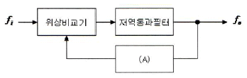
- 전압제어발진기(VCO)
- 샘플링(sampling) 회로
- 증폭기(amplifier)
- 정류기(rectifier)
(정답률: 88%)
35. 다음 중 시분할 다중화 접속 구조의 특징에 해당하는 것은?
- 심한 심볼간 간섭
- 높은 기지국 비용
- 낮은 호 전환
- 간단한 하드웨어
(정답률: 63%)
36. CDMA 시스템의 OMNI 기지국에서 처리이득이 128, 에너지 잡음밀도가 6[dB]일 때의 채널 수는 얼마인가? (단, 음성화율: 0.45, 주파수재사용 효율: 0.6)
- 36[CH]
- 48[CH]
- 42[CH]
- 109[CH]
(정답률: 70%)
37. 다음은 소형 저궤도 위성 시스템에 적용된 다중 접속 방식과 맞게 연결된 것은?
- LEOSAT - FDMA
- STARSYS - SSMA
- VITASAT - CDMA
- ORBCOMM - TDMA
(정답률: 80%)
38. 다음 중 주파수분할방식(FDMA)에 대한 시분할방식(TDM)의 특징으로 맞지 않는 것은?
- 통화로 당 점유주파수 대역폭이 넓다.
- 회선의 분기가 용이하다.
- 특성이 양호한 필터가 많이 필요하다.
- 누화잡음을 적게 할 수 있다.
(정답률: 70%)
39. 전원설비의 전력변환장치 중 인버터(inverter)에 대한 설명으로 맞는 것은?
- 직류전원을 다른 크기의 직류전원으로 변환하는 장치
- 직류전원을 일정한 주파수의 교류전원으로 변환하는 장치
- 교류전압을 직류전압으로 변환하는 장치
- 교류전압을 다른 주파수와 크기를 갖는 교류전압으로 변환하는 장치
(정답률: 90%)
40. 다음 중 반송 신호의 순간 주파수가 PCM 코드에 응답하여 두 개의 값들 사이에서 전환되는 디지털 변조 시스템은 어느 것인가?
- ASK
- PSK
- FSK
- MSK
(정답률: 71%)
3과목: 안테나 개론
41. λ/4의 수직접지 안테나에 주파수 2[MHz]이고, 급전점의 최대 전류가 10[A]를 흘렸을 때 도선상의 25[m]인 지점에서의 전류는 얼마인가?
- 3[A]
- 5[A]
- 7[A]
- 9[A]
(정답률: 72%)
42. 다음 설명 중 틀린 것은?
- 전파는 종파이다.
- 정전계에서는 에너지 이동이 없다.
- 유도전자계는 거리의 제곱에 반비례하여 감쇠한다.
- 복사전자계는 거리에 반비례하여 감쇠한다.
(정답률: 93%)
43. 야간에 먼 곳의 라디오가 잘 들리는 이유는 어느 것인가?
- 지표파가 잘 전파되므로
- 산란파가 잘 전파되므로
- D층의 흡수가 적으므로
- 페이딩 현상이 적으므로
(정답률: 86%)
44. 어떤 급전선의 종단을 단락시켰을 때의 입력 임피던스가 25[Ω]이고 개방했을 때는 100[Ω]이었다. 이 급전선의 특성 임피던스는 얼마인가?
- 25[Ω]
- 50[Ω]
- 100[Ω]
- 250[Ω]
(정답률: 84%)
45. 특성 임피던스가 270[Ω]인 무손실 선로에 흐르는 고주파 전류의 최대값이 0.5[W]이고 최소 전류값이 0.1[W]라 할 때 이 선로에 전송되고 있는 전력은 얼마인가? (문제 오류로 실제 시험에서는 모두 정답처리 되었습니다. 여기서는 가번을 누르면 정답 처리 됩니다.)
- 10.8[W]
- 27[W]
- 67.5[W]
- 135[W]
(정답률: 73%)
46. 인덕턴스 L과 커패시턴스 C의 직렬회로와 등가인 안테나가 있다. 이 안테나에 커패시턴스 Ca를 직렬로 연결하면 공진주파수 f는?
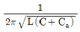
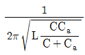
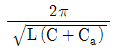
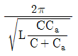
(정답률: 69%)
47. 전파의 파장과 관련이 있는 것은? (문제 오류로 실제 시험에서는 나, 다번이 정답처리 되었습니다. 여기서는 나번을 누르면 정답 처리 됩니다.)
- 전파의 편파
- 전파의 속도
- 전파의 회절
- 전파의 간섭
(정답률: 84%)
48. 등방성 공중선의 방사전력이 P일 때, 공중선으로부터 r[m] 떨어진 지점에서 전계강도 E는?
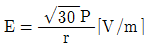
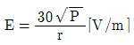
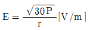
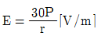
(정답률: 58%)
49. 전파의 속도는 매질의 어느 것에 의하여 변화되는가?
- 유전율과 투자율
- 유전율과 도전율
- 투자율과 도전율
- 도전율과 비유전율
(정답률: 91%)
50. 비동조 급전선에 대한 설명으로 잘못된 것은?
- 급전상의 전송파는 정재파이다.
- 정합장치가 필요하다.
- 급전선에서의 손실이 적고 전송효율이 높다.
- 송신기와 안테나 사이의 거리가 멀 때 적합하다.
(정답률: 65%)
51. 안테나의 공진주파수를 낮추기 위해서는?
- 안테나에 직렬로 인덕터를 연결한다.
- 안테나에 직렬로 커패시터를 연결한다.
- 안테나에 직렬로 저항을 연결한다.
- 안테나에 직렬로 저항과 커패시터를 연결한다.
(정답률: 68%)
52. 다음 안테나의 이득에 관한 설명 중 가장 적합한 것은?
- 지향성이 예민하여야 안테나의 이득이 크다.
- 개구효율과 안테나의 이득은 관련이 없다.
- 방사저항이 작아야 안테나의 이득이 크다.
- 안테나의 이득이 크면 협대역이 된다.
(정답률: 68%)
53. 안테나 선로의 중간에 코일(loading coil)을 삽입하면 어떤 역할을 하는가?
- 등가적으로 안테나의 길이가 길어진 것과 같은 효과가 있다.
- 더 높은 주파수에서 공진하는 효과가 있다.
- 지향성을 변화시키는 효과가 있다.
- 임피던스를 정합시키는 작용을 한다.
(정답률: 81%)
54. 대기층의 동요, 소기단의 통과 등 기상상태의 소변화에 의하여 발생하는 신틸레이션 페이딩의 특징으로 틀린 것은?
- 주기가 빠르고 불규칙하다.
- 송수신점 간의 거리가 멀수록 변동주기가 길어진다.
- 하계보다 동계에 더 많이 발생한다.
- AGC, AVC를 이용하여 방지할 수 있다.
(정답률: 82%)
55. 슬롯 안테나의 대역폭을 개선하는 방법으로 가장 타당한 것은?
- 슬롯의 폭을 넓게 한다.
- 슬롯의 폭을 좁게 한다.
- 슬롯을 여러개 배열한다.
- 슬롯에 저항을 설치한다.
(정답률: 79%)
56. 구형 도파관에 5[GHz]의 전파를 전송할 때 사용된 도파관의 차단 파장이 10[cm]라면 도파관의 관내 파장은 얼마인가?
- 15[cm]
- 12[cm]
- 6[cm]
- 7.5[cm]
(정답률: 61%)
57. 일반적으로 전리층 통신에서의 최적사용주파수 (FOT)는 최고사용주파수(MUF)의 몇 [%] 인가?
- 60[%]
- 75[%]
- 85[%]
- 95[%]
(정답률: 87%)
58. 주파수 150[kHz]로 발사하는 무선통신에서 정전계, 유도 전자계, 복사 전자계가 같아지는 거리는 안테나로부터 얼마의 거리인가?
- 320[m]
- 500[m]
- 680[m]
- 770[m]
(정답률: 81%)
59. 전자파의 회절현상에 대한 설명으로 적합하지 않은 것은?
- 전파의 전파통신 상에 산이나 건물 등의 장애물이 있을 때 가시거리외 음영부분까지 전자파의 일부가 휘어서 도달하는 현상을 말한다.
- 주파수가 높을수록 회절현상은 심하다.
- 프레넬 존(Fresnel Zone)의 원인이 된다.
- 호이겐스 원리에 의하여 설명된다.
(정답률: 77%)
60. 다음 중 태양잡음에 대한 설명으로 틀린 것은?
- 태양 활동이 정온한 때에는 흑체방사나 흑점상공의 코로나에서의 방사에 의해 발생한다.
- 지구상에서 본 태양이 보이는 입체각은 6.8×10[sterad]로 작은 점과 같으나, 여기에서 강력한 잡음 전파가 발사하고 이다.
- 단파와 마이크로파대에서는 무시된다.
- 태양 활동이 맹렬할 때에는 아웃버스트(Out burst)나 태양전파 폭풍우에 의해 잡음이 발생한다.
(정답률: 85%)
4과목: 전자계산기 일반 및 무선설비기준
61. 다음은 프로그램에 대한 설명이다. 틀린 것은?
- Supervisor Program : 처리 프로그램의 중추적인 역할로, 제어 프로그램의 실행과정과 시스템 전체의 동작 상태를 감시하는 역할을 한다.
- Job Management Program : 작업의 연속적인 진행을 위한 준비와 처리 기능을 수행한다.
- Data Management Program : 작업의 연속적인 진행을 위한 준비와 처리 기능을 수행한다.
- Problem Processing Program : 사용자가 업무적인 필요에 의해서 작성한다.
(정답률: 71%)
62. 다음 설명에 해당하는 것은 무엇인가?
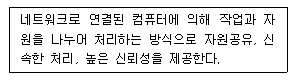
- 분산처리 시스템
- 병렬처리 시스템
- 다중처리 시스템
- 듀플렉스 시스템
(정답률: 82%)
63. 마이크로프로세서와 함께 구성되는 메모리의 구조 중 명령어 메모리와 데이터 메모리가 물리적으로 분리되어 있는 구조를 무엇이라고 하는가?
- von neumann 구조
- harvard 구조
- cascade 구조
- princeton 구조
(정답률: 85%)
64. 다음 중 운영체제에 대한 설명으로 틀린 것은?
- 컴퓨터 시스템 장치를 효율적으로 관리
- 컴퓨터를 사용자가 편리하게 이용 가능
- 업무를 처리하기 위해 사용자가 개발한 소프트웨어
- 사용자와 하드웨어 사이의 interface
(정답률: 90%)
65. 다음 중 형식등록을 하여야 하는 무선설비의 기기로 틀린 것은?
- 이동가입무선전화장치
- 개인휴대통신용 무선설비의 기기
- 위성휴대통신무선국용 무선설비의 기기
- 네비텍스수신기
(정답률: 66%)
66. 인터럽트가 발생하였을 때 수행되는 프로그램(코드)을 무엇이라고 하는가?
- ISR
- IVT
- IRQ
- PCI
(정답률: 81%)
67. 다음 중 전기통신역무를 제공하는 무선국 송신설비의 공중선 전력 허용 편차로 맞는 것은?
- 상한 50[%], 하한 20[%]
- 상한 10[%], 하한 20[%]
- 상한 20[%], 하한 없음
- 상한 20[%], 하한 5[%]
(정답률: 72%)
68. 현재 임베디드 시스템에서 주로 사용되는 마이크로프로세서가 채택하는 구조로서 명령어의 세트와 구조가 단순화된 형태를 일컫는 말은 무엇인가?
- RAID
- RISC
- CISC
- FIFO
(정답률: 63%)
69. 다음 중 전파법은?
- 방송통신위원회 훈령이다.
- 대통령령이다.
- 법률이다.
- 무선통신사업자의 약관이다.
(정답률: 92%)
70. 커널 공간내에 할당 받은 PCB에 저장된 프로세서 관련 정보들은 운영체제마다 조금씩 다를 수 있지만 PCB에 유지할 정보가 아닌 것은?
- PID(Process Identification Number)
- priority
- context save area
- program check interrupts
(정답률: 53%)
71. 컴퓨터가 인식하는 명령어를 논리적으로 순서에 맞게 나열하여, 어떤 기능을 처리하게 해주는 것을 무엇이라고 하는가?
- 하드웨어
- 소프트웨어
- 부울대수
- 논리회로
(정답률: 66%)
72. 다음 중 심사에 의한 주파수 할당시 고려할 사항이 아닌 것은?
- 전파자원 이용의 효율성
- 신청자의 주파수 이용 실적
- 신청자의 기술적 능력
- 할당하려는 주파수의 특성
(정답률: 86%)
73. 다음 펌웨어에 대한 설명 중 옳은 것은?
- 하드웨어와 소프트웨어의 중간적 성격을 가진다.
- 하드웨어의 교체없이 소프트웨어 업그레이드만으로는 시스템 성능을 개선할 수 없다.
- RAM에 저장되는 마이크로컴퓨터 프로그램이다.
- 시스템 소프트웨어로서 응용 소프트웨어를 관리하는 것이다.
(정답률: 87%)
74. 인터럽트의 발생원인이 아닌 것은?
- 전원 이상
- 오퍼레이터 조작 또는 타이머
- 서브프로그램 호출
- 제어감시(SVC)
(정답률: 83%)
75. 다음 중 공중선과 함께 형식검정을 신청한 기기에 대한 공중선 특성 확인 방법으로 틀린 것은?
- 공중선과 수신장치 사이에는 증폭기 등 수동회로가 부가되지 아니한 것일 것
- 공중선의 종류 및 형태
- 공중선의 이득 및 지향특성
- 공중선의 편파특성
(정답률: 58%)
76. 다음 중 방송통신기기 지정시험기관이 행하는 시험분야로 틀린 것은?
- 유선 시험분야
- 무선 시험분야
- 전자파내성 시험분야
- 전류흡수율 시험분야
(정답률: 76%)
77. 다음 중 이미 완제품으로 출시된 프로그램 중에 존재하는 오류 또는 버그를 수정하기 위하여 일부 파일을 변경해 주는 프로그램을 무엇이라 하는가?
- bundle
- freeware
- shareware
- patch
(정답률: 89%)
78. 다음 중 선박에 설치하는 무선 항행을 위한 레이더의 형식기호로 틀린 것은?
- 제2종 레이더 : RB
- 제3종 레이더 : RC
- 제4종 레이더 : RD
- 자동레이더푸롯팅 기능을 가진 1종 레이더 : RA
(정답률: 82%)
79. 다음 중 방송용 주파수 대역으로 틀린 사항은?
- 중파방송 : 300[kHz]~3[MHz]
- 단파방송 : 3[MHz]~30[MHz]
- 초단파방송 : 30[MHz]~300[MHz]
- 극초단파방송 : 300[MHz]~3000[GHz]
(정답률: 73%)
80. 다음은 의료용 전파응용설비의 안전시설 기준이다. 괄호에 들어갈 내용으로 적합한 것은?
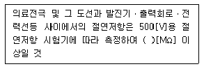
- 10
- 30
- 50
- 70
(정답률: 65%)
존 비트는 BCD 코드에서 첫 번째 비트로, 0 또는 1의 값을 가집니다. 이 비트는 숫자와 알파벳 대문자의 경우에는 항상 0으로 설정되어 있습니다.
하지만 소문자와 일부 특수문자의 경우에는 존 비트가 1로 설정됩니다. 따라서 "K", "O", "P"는 모두 존 비트가 0으로 설정되어 있지만, "A"는 존 비트가 1로 설정되어 있습니다.